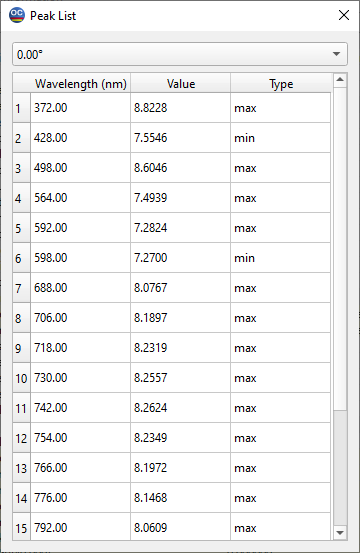

Measurement Peak List
Measurement Peak List displays all minima and maxima detected in the measurement. This dialog can be opened using the right-click menu of any Measurement Editor.
The Current Measurement can be analyzed for peaks using the right-click command in the Fitting Windows.

Plane - Characteristic Combobox allows you to select a specific case of interest, which is essential for multipage measurement files containing multiple characteristics.
Since measurement data are always influenced by noise, you can apply Noise Suppression to reduce the detection of noise as false extrema values. The Noise Suppression Level can be adjusted using the corresponding combobox and can also be deactivated if needed.
The obtained list can be copied to the clipboard using the Copy command.